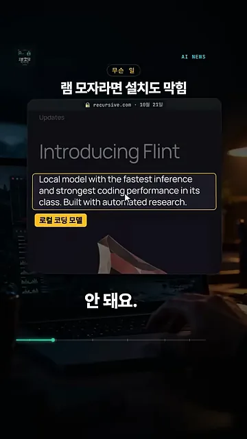
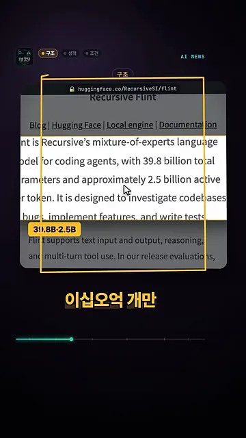
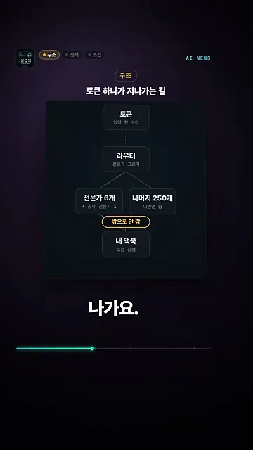
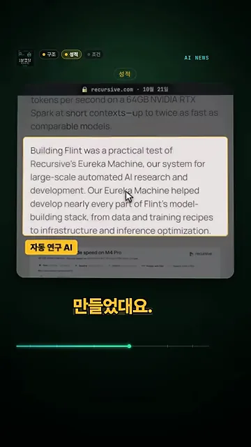
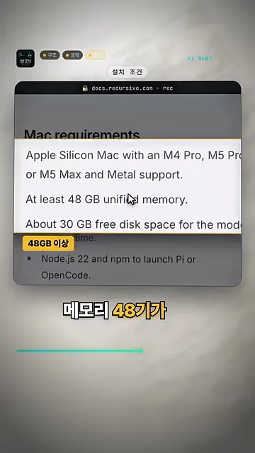
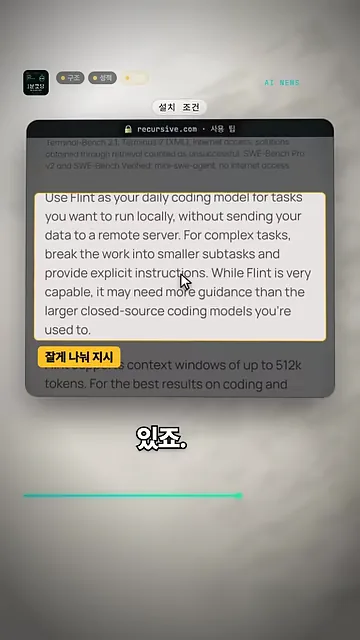
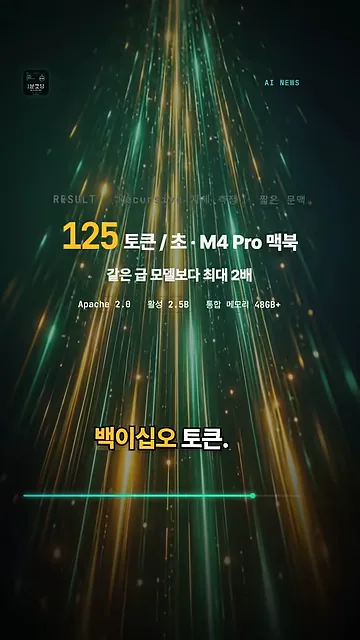
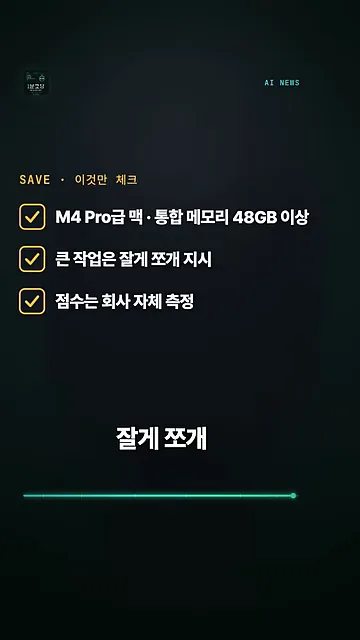

Flint는 어떤 모델인가요
Flint는 Recursive라는 회사가 10월 21일에 공개한 코딩 전용 로컬 모델이에요. 가중치를 Apache 2.0 라이선스로 풀어서 누구나 받아 쓸 수 있어요. 영상이 '공짜'라고 부르는 이유가 여기 있어요.
영상은 Recursive 블로그의 발표 글을 띄우고, 부제 한 줄에 노란 테두리를 쳐요. 같은 급에서 가장 빠르고 코딩을 가장 잘하는 로컬 모델이고, 자동 연구로 만들었다는 문장이에요. 아래 노란 딱지 '로컬 코딩 모델'이 영상의 요약이에요.

왜 맥북에서도 가볍게 돌까요
비결은 전문가 혼합 구조예요. 모델 안에 작은 '전문가' 네트워크가 여러 개 있고, 토큰마다 그중 몇 개만 골라 계산해요. 화면은 Hugging Face 모델 카드에서 전체 파라미터 39.8B, 토큰마다 쓰는 파라미터 약 2.5B라는 문장을 짚어요. 영상은 이를 400억 개 중 25억 개라고 읽어요.

두 숫자를 같은 눈금에 놓으면 차이가 확 보여요. 토큰 하나를 만들 때 움직이는 몫은 전체의 6% 남짓이에요.
영상은 토큰 하나가 지나가는 길도 그림으로 보여 줘요. 토큰이 들어오면 라우터가 전문가를 골라요. 고른 전문가 6개(공유 전문가 1개는 따로)만 일하고, 나머지 250개는 이번엔 쉬어요. 맨 아래 '내 맥북' 칸 위에 붙은 '밖으로 안 감' 딱지가 이 구간의 결론이에요.

성적과 만든 방식
영상은 성적을 하나만 들어요. 회사가 직접 잰 코딩 시험 SWE-bench Pro v2에서 89.7%예요. 영상은 마지막 체크리스트에서 '점수는 회사 자체 측정'이라고 한 번 더 짚어요. 다른 곳이 같은 조건으로 다시 잰 점수가 아니라는 뜻이에요.
사람과 자동 연구 AI가 함께 만들었어요
만든 방식도 영상이 짚는 포인트예요. 화면은 블로그에서 Eureka Machine 문단을 짚고 '자동 연구 AI' 딱지를 붙여요. Eureka Machine은 Recursive의 자동 AI(Artificial Intelligence) 연구 시스템이에요. 데이터와 학습 방법부터 인프라, 추론 최적화까지 Flint 제작 과정의 거의 모든 단계에 손을 댔다고 해요. 영상은 사람과 이 시스템이 넉 달 만에 만들었다고 말해요.

설치 전에 확인할 것과 쓰는 법
가장 중요한 조건은 메모리예요. 화면은 공식 문서의 맥 요구 사항을 띄우고 'At least 48 GB unified memory' 줄에 '48GB 이상' 딱지를 붙여요. 화면 글씨가 작아서 아래 표로 옮겨 적었어요.

| 항목 | 조건 |
|---|---|
| 칩 | M4 Pro, M5 Pro, M5 Max (Metal 지원) |
| 통합 메모리 | 48GB 이상 |
| 여유 디스크 | 약 30GB (모델과 실행 환경) |
| 기타 | Pi나 OpenCode로 띄우려면 Node.js 22와 npm |
큰 일은 잘게 쪼개서 맡겨요
쓰는 법에 대한 조언은 블로그에 그대로 있어요. 화면이 짚은 문단은 복잡한 작업을 작은 하위 작업으로 나누고 지시를 분명하게 주라는 내용이에요. 큰 폐쇄형 코딩 모델보다 안내가 더 필요할 수 있다는 말도 함께 있어요. 영상은 여기에 '잘게 나눠 지시' 딱지를 붙여요.

속도와 마지막 체크리스트
속도는 M4 Pro 맥북 한 대에서 초당 125토큰, 같은 급 모델보다 최대 두 배 빠르대요. 화면 아래 작은 줄에는 Apache 2.0, 활성 2.5B, 통합 메모리 48GB+가 한 번 더 정리돼 있어요.

영상은 저장해 둘 체크리스트 세 줄로 끝나요. M4 Pro급 맥과 통합 메모리 48GB 이상, 큰 작업은 잘게 쪼개 지시, 점수는 회사 자체 측정이에요.
